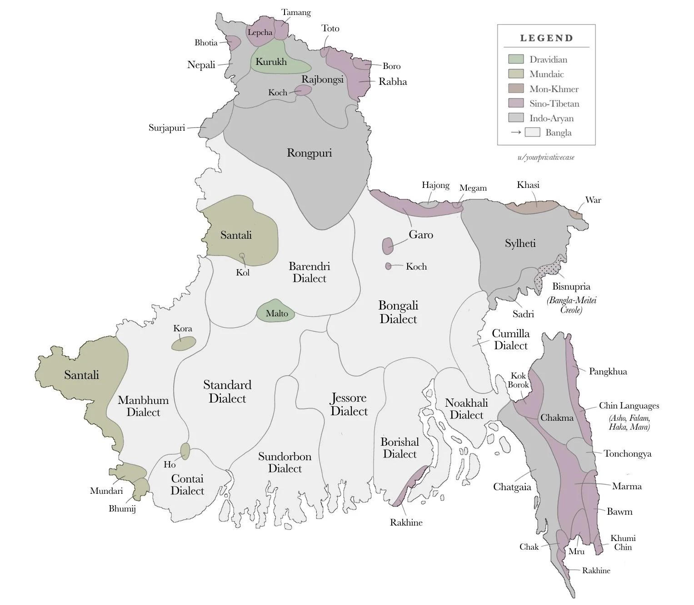
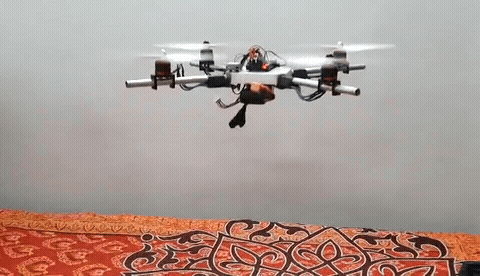
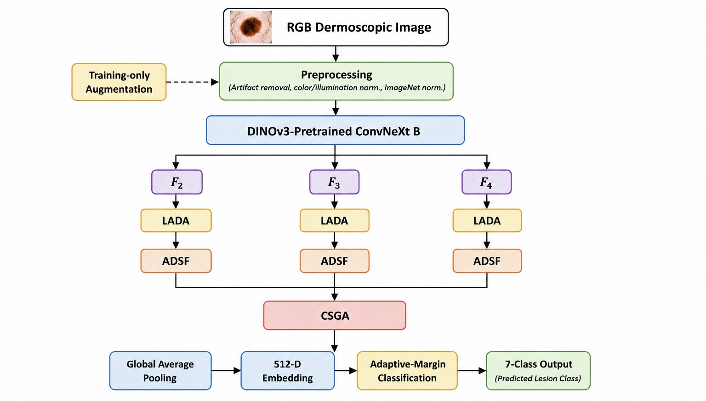
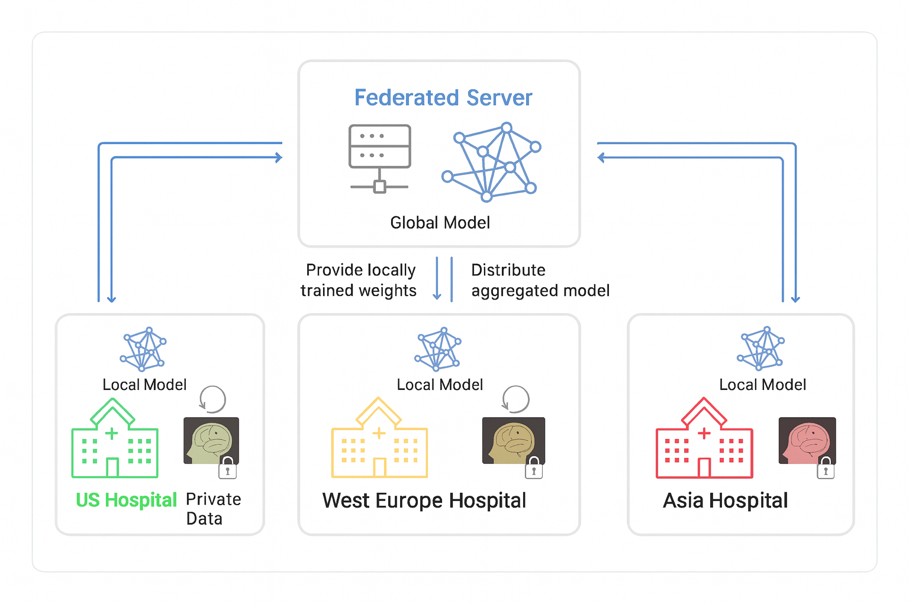

Things I've built
Selected Projects
Real architecture diagrams and results from published and in-progress work.

Bangla Dialect → English Speech Translation
Read PaperUndergraduate thesis: a real-time speech translation framework for rural telemedicine, converting regional Bangla dialects to Standard Bangla before English translation using mBERT, T5, NMT5, GRU, Bi-Directional LSTM, and BARK across the pipeline.

Drone Weather Station
View on GitHub C++ · Arduino · APM 2.8 · ArdupilotAn autonomous quadcopter equipped with temperature, humidity, barometric pressure, UV, infrared, and gas sensors to monitor atmospheric conditions in remote, hard-to-reach locations. Built on an APM 2.8 flight controller with Arduino-based sensing and Bluetooth-controlled data transmission, giving remote communities independent, real-time weather data for agriculture and disaster preparedness.

DINOv3 Skin Lesion Classification
Read Paper DINOv3 · ConvNeXt-B · Self-Supervised LearningLesion-adaptive framework combining Lesion Aware Dual Attention, Adaptive Dilated Scale Fusion, and Cross Scale Gated Aggregation. Achieved 99.36% accuracy on HAM10000 with external validation on 3 datasets.

Federated Brain Tumor Segmentation
Read Paper Federated Learning · nnU-Net · Swin-UNETRPrivacy-preserving segmentation across multiple institutions using nnU-Net and Swin-UNETR, avoiding centralized patient data sharing. Swin-UNETR reached 97.15% accuracy across 5 federated rounds.